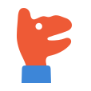
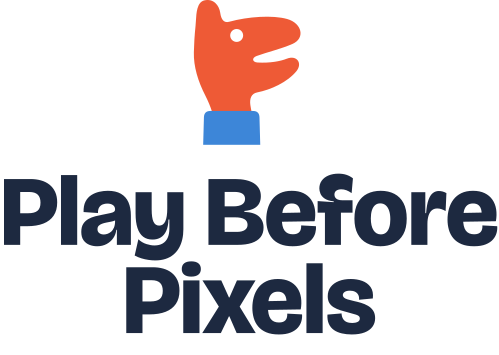
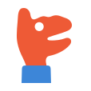
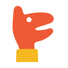

Before pixels, the first moving pictures were a lamp, a wall and a hand. The mark is a hand-shadow puppet mid-sentence: fingers make the top jaw, the thumb the bottom jaw, a raised finger the ear, and the eye is the gap of light between knuckles. A grown-up's sleeve, a child's giggle, zero batteries: talk, touch and play in one shape.
Mark · 512 px

Lockups on paper #FFFFFF

Lockups on ink #1D2940

Actual size · 64 / 32 / 16 px


Play Before Pixels
One colour · stamp & embroidery

Tee & tote
Tee: full colour on ink. Tote: one-colour white, single screen.
Board book · spine & cover corner
Play Before Pixels · Where Is Duck?
Where is Duck?
Sample title for mock-up only. Spine and corner badge use the mark alone.
Social avatar · 1080 crop · teacher cover
Play Before Pixels
Talk, touch and play
Talk-Rich Classroom Routines
Paper-and-play starters for grades K–5
Avatar: mark on sun tint, safe inside the circle crop. Cover: horizontal lockup at 120 px wide (sample title).